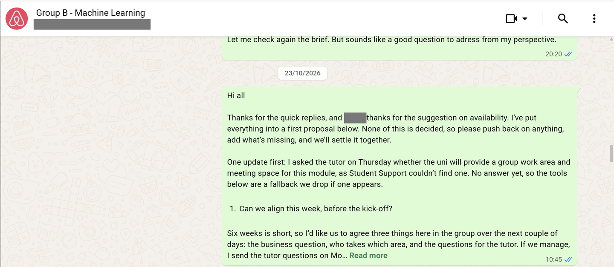
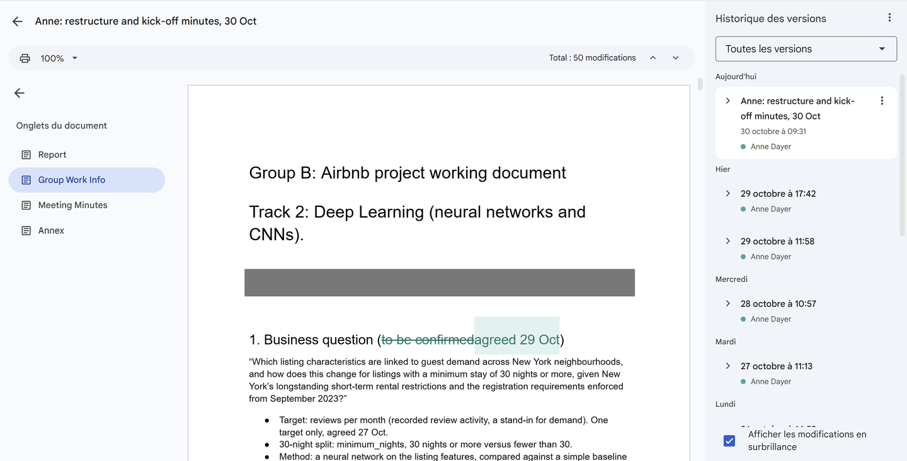
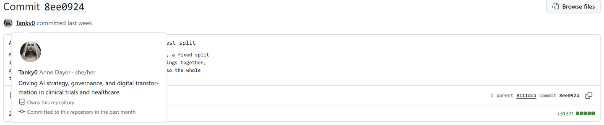
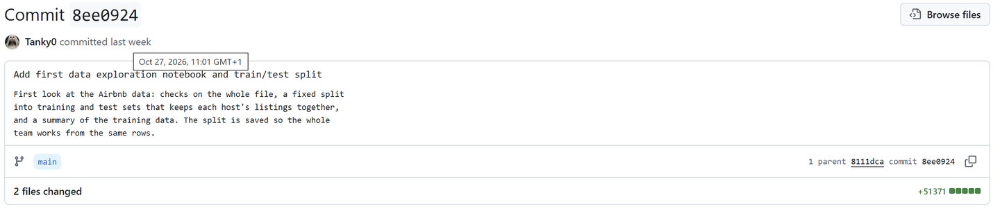
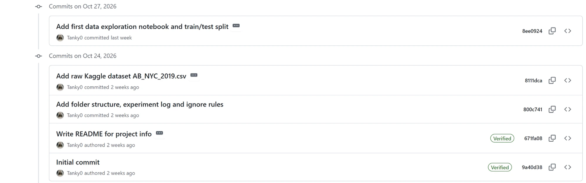

Scope
Covers Units 1 to 6 · Due 30 November 2026 · Evidences learning outcomes 1 to 4
The assignment is on the module page. This log records Group B’s decisions and my part in them to the end of Unit 6.
Business Question and Working Method
The brief fixes the data to the Airbnb New York City 2019 listings from Kaggle (Gomonov, 2019) and the audience to Airbnb’s executive team, who want clear insights rather than models. Group B works on the deep learning track: neural networks and convolutional networks, applied to image-based property analysis, text sentiment or demand forecasting. Each group works independently, and results are compared across the three tracks afterwards.
The submission has two parts with the same deadline: one team report of up to 1,000 words, and an individual peer review of each teammate.
Group B agreed its question at the kick-off on 29 October: “Which listing characteristics are linked to guest demand across New York neighbourhoods, and how does this change for listings with a minimum stay of 30 nights or more, given New York’s longstanding short-term rental restrictions and the registration requirements enforced from September 2023?” The city sets out the registration law and the start of its enforcement (New York City Mayor’s Office of Special Enforcement, no date).
We predict one thing only, reviews per month, as a stand-in for demand. Days available was rejected as a target because the data cannot separate nights booked from nights the host closed: 72% of listings with no availability had no review in the year before the snapshot. A neural network will be compared with a simple guess and a simpler comparison model on the same test split, and we agreed to fix what counts as a real improvement before seeing any results.
Day-to-day points go through WhatsApp, the report is drafted in a shared Google Doc, and the code is kept in a private GitHub repository, with one notebook per person and a shared log of every model run. Nobody edits a file owned by someone else, which keeps the history traceable.
The report will describe segments by minimum stay and room type, never as legal or illegal, because the file has no registration, building or host-presence data. Host names stay out of all outputs. I raised both in my first look at the data.
Team, Contract and Roles
| Member | Contribution | Team role |
|---|---|---|
| Anne Dayer (me) | Coordination, minutes, tutor contact, merging and submitting the report | Lead and integration |
| S.M. | Data cleaning, features, exploration figures and the test split | Data and exploration |
| S.N. | Comparison model and evaluation | Modelling: baseline |
| A.A. | Main neural network and the final test | Modelling: neural network |
| E.S. | Business narrative, final charts and the recommendation | Business narrative and visuals |
All five members had signed the team contract by 26 October, and I sent it to the tutor. We agreed roles at the kick-off on 29 October, by strengths and what each of us wants to practise, and can be swapped after the first fortnight. Each area reviews the one next to it.
Kick-off Minutes
Zoom, 29 October 2026, 18:30 London time. I chaired and wrote these minutes from my notes, and put them in the shared Doc on 30 October.
| No. | Decision |
|---|---|
| 1 | Business question agreed as worded above |
| 2 | One target, reviews per month; availability for description only |
| 3 | Roles and work split agreed |
| 4 | Never-reviewed listings count as 0, plus one check on reviewed listings only |
| 5 | S.M.’s test split frozen for everyone from 2 November; every model run logs the split file name |
| 6 | WhatsApp as main channel, Google Doc for the report, GitHub for code; first drafts 13 November, second call 17 November |
| 7 | Nobody edits a file owned by someone else; suggestions go to the owner |
| 8 | A short progress update on WhatsApp every Friday |
| 9 | Submit by 27 November at the latest |
Left open: what counts as “good”, accepted unless someone objects by 6 November. My action: follow up on the tutor’s answers.
Timeline
| Date | Event |
|---|---|
| 21 Oct | Groups pre-allocated: Group B, five members, deep learning track. I made first contact, created the WhatsApp group and shared a draft contract |
| 23 Oct | I posted the first proposal: business question, work split, tools and timeline |
| 24 Oct | First seminar. I put its notes, the question, roles and a draft timeline into a shared Google Doc |
| 24 Oct | I created the private GitHub repository, with the README, folder structure, experiment log and raw data |
| 25 Oct | I sent four questions to the tutor: extra data, the comparison model, the cross-track session and how the report is identified |
| 26 Oct | All five signed the contract, and I sent it to the tutor |
| 26 to 27 Oct | I set up Colab access and sent invitations |
| 27 Oct | I shared a first look at the data, with a first test split. We agreed one target: reviews per month |
| 29 Oct | Kick-off on Zoom: we agreed the question, roles and ways of working; S.M.’s test split frozen from 2 November |
| 29 Oct | I sent a follow-up on the 25 October questions through Student Support |
| 30 Oct | I published the minutes and decision record in the shared Doc |
| 31 Oct | Tutor replied to the 25 October questions, copying the group (see Feedback Received) |
| 31 Oct | I sent four follow-up questions to the tutor on the text input, word count, appendices and code; answered the same afternoon |
| 10 Nov | Tutor set out the cross-track discussion: Student Lounge, after the deadline (see Feedback Received) |
| 30 Nov | Submission deadline for the team report and the peer review, 23:55 |
My Contribution
As lead and integrator I hold the deadlines, the minutes and the contact with the tutor, and I will merge and submit the report. So far, I have posted the first proposal on 23 October, gathered the five signatures on the contract and sent it to the tutor, put four scope questions to her, and set up the shared Doc, the GitHub repository and the Colab route. My first look at the data (notebook 01-load-and-inspect-ad.ipynb) covered 48,895 listings, 21% of them never reviewed, and showed why availability could not serve as a target. I proposed a first test split, kept for the record once S.M.’s better-balanced split replaced it, and I chaired the kick-off and wrote the minutes. My own sections, the introduction and the conclusion, are due with the first drafts on 13 November.
Feedback Received
Dr Elizabeth Oladapo answered our four questions on 31 October, copying the group, and my four follow-up questions on the report the same afternoon. The team report itself is not yet marked.
| Topic | Tutor’s guidance | Our response |
|---|---|---|
| Team contract | No need to send it, as this is a group assessment; make sure everyone knows their role and contributes. | Roles were agreed at the kick-off on 29 October and are listed above. |
| Extra data | Use AB_NYC_2019.csv as the main source. Any extra data must be justified, compatible with it and credited, and must help answer the business question. | E.S. first raised the September 2026 Inside Airbnb snapshot (Inside Airbnb, 2026). On 31 October I proposed keeping to the Kaggle file: the snapshot is seven years newer, many listings changed after the 2023 rules, justifying it would cost words and time we do not have, and the listing titles already give us text. The group decides by 6 November. |
| Comparison model | A simple linear regression baseline is allowed; Track 2 must still apply deep learning. The comparison can show what the network adds and its limits. | Matches our plan: S.N.’s comparison model and A.A.’s network are tested on the same split. |
| Cross-track discussion | Held in the Student Lounge on Moodle after the 30 November deadline, not before. Each group posts a short overview: business question, track and approach, method and modelling choices, key findings and business implications, and limitations or lessons. It is not marked and is not part of the 1,000-word report (announcement of 10 November). | Our focus stays on the analysis and the report until submission. |
| Report identification | Name the group and all its members; one member submits for the team. | The report will carry Group B and our five names, and I will submit it. |
| Business question | Keep guest demand and host availability apart, as different factors may drive them; support our reading of the 2023 New York rules with sources; reflect the limits of 2019 data. | Demand is our only target, with availability descriptive since 27 October. The New York rules will be cited from appropriate sources, and the limitations will cover the 2019 snapshot, reviews as a stand-in for demand, and why availability is not a target. |
| Text input (follow-up) | A neural network meets Track 2. Listing titles are a reasonable text input if we show how they help predict review activity, justify how the text is represented and explain how the model processes it, and critically evaluate what deep learning adds. | Titles stay a possible add-on if time allows; if used, the method section will justify the representation. |
| Word count (follow-up) | At most 1,000 words. Images, references, the table of contents and appendices are excluded, and so are figure captions, results tables and the AI acknowledgement; keep them concise. | Our Doc counted words in results tables; the rule needs updating there. |
| Appendices (follow-up) | Allowed for supplementary material, but not to extend the report, which must be complete without them. | Matches our rule: appendices only for genuinely supplementary material. |
| Code (follow-up) | Do not reference the GitHub repository in the report, which must stand alone. The code is evidence of our work for the e-portfolio, where all group artefacts should be kept for Unit 12. | Matches our rule of no code in the report; each of us keeps our code and artefacts for the Unit 12 e-portfolio. |
Evidence
Screenshots of my own contributions. Classmates’ names are covered.





References
Gomonov, D. (2019) New York City Airbnb Open Data [Dataset]. Kaggle. Available at: https://www.kaggle.com/datasets/dgomonov/new-york-city-airbnb-open-data (Accessed: 24 October 2026).
Inside Airbnb (2026) Get the Data. Available at: https://insideairbnb.com/get-the-data/ (Accessed: 4 November 2026).
New York City Mayor’s Office of Special Enforcement (no date) Registration Law. Available at: https://www.nyc.gov/site/specialenforcement/registration-law/registration.page (Accessed: 4 November 2026).
AI Acknowledgement
Generative AI tools (Grammarly and Claude) were used for proofreading, language refinement, and formatting support on this log. The record of decisions, my contribution to them and the source checking reported here remain entirely my own work. The module-level acknowledgement states the same position for the e-portfolio as a whole.